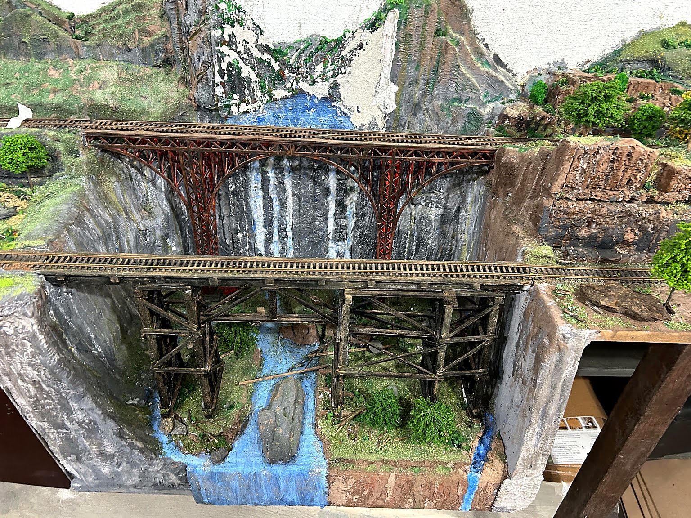

Viadutos sobre um cânion

Dois viadutos atravessam o cânion da maquete. O viaduto em primeiro plano foi construído por mim com madeira balsa. O viaduto ao fundo foi produzido em impressora 3D pelo saudoso Marcos AbiAckel.
Ao fundo do cenário também aparecem restos de um acidente ferroviário envolvendo um vagão que transportava madeira.
Na parede ao fundo, foi aplicada uma folha de isopor, posteriormente moldada e pintada para simular o desgaste natural da rocha. A cachoeira, dividida em várias quedas, foi confeccionada com papel, algodão e glitter, procurando reproduzir o movimento e a espuma da água. Na parte de cima da cachoeira, onde aparece uma mancha branca, será aplicada uma folha de depron pintada com a imagem de uma montanha de pedra.